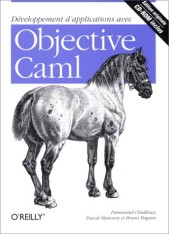
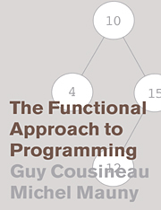
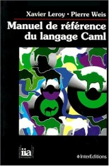
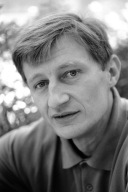

Linguagens e Ambientes de Programação (2017/2018)
Teórica 02 (08/mar/2018)
Paradigma de programação funcional
Elementos essenciais da linguagem OCaml.
Avaliação de expressões em OCaml.
Tipos em OCaml. Tipos básicos e tipos estruturados. Inferência de tipos. Funções monomórficas e funções polimórficas. Não há sobreposição.
Listas. Construtores de listas. Emparelhamento de padrões. Exemplos.
Numa das próximas aulas teóricas (provavelmente na teórica 7) iremos discutir a noção de paradigma de programação em geral e identificar os conceitos de base de alguns paradigmas concretos como o paradigma imperativo e o paradigma orientado pelos objetos.
Para já, eis as características essenciais do...
- Os conceitos essenciais deste paradigma, usados para pensar e escrever os programas, são três: função, aplicação, avaliação de expressões.
- Uma função é uma entidade que sabe produzir um resultado a partir dos seus argumentos.
- A computação consiste na avaliação de expressões onde podem ocorrer aplicações de funções a argumentos. O processo de avaliação envolve múltiplos passos de simplificação chamados reduções. A avaliação termina quando se chega a uma expressão que não pode ser mais simplificada (essa expressão chama-se "resultado").
- Neste paradigma não existe a noção de "estado", ou seja não existem "variáveis mutáveis" nem "atribuição". Também não existem ciclos ("iteração"), sendo a recursividade a única forma de obter repetição.
- Também não está prevista, por não ser necessária, uma noção de "sequenciação". Ou seja, o paradigma não define por que ordem deve ser executado um programa. O resultado dum programa que termine é sempre o mesmo, independentemente da ordem de execução.
Um pouco mais abaixo, poderá observar alguns exemplos de avaliação de expressões, no contexto da linguagem OCaml.
Linguagem OCaml



Xavier Leroy
| 
Didier Rémy
|
Damien Doligez
|
Jérôme Vouillon
|
Algumas características
- O OCaml foi desenvolvido no INRIA, a partir de 1991, por Xavier Leroy e Damien Doligez, a que se juntaram Jérôme Vouillon, Didier Rémy e outros em 1996.
- A linguagem OCaml é uma das muitas linguagens que derivam da linguagem ML.
[O ML começou por ser a metalinguagem do demonstrador de teoremas LCF, desenvolvido no final dos anos 70 por Robin Milner e outros na University of Edinburgh. Mas o ML evoluiu para passar a ser usado como linguagem de programação"normal". Eis alguns dialetos da linguagem ML: Standard ML, Caml, OCaml, Alice, F#.]
- O OCaml é uma linguagem onde se unificam os paradigmas funcional, imperativo e orientado pelos objetos. Na nossa cadeira estamos interessados em estudar apenas o fragmento funcional puro da linguagem.
- Tem um sistema de tipos estático com suporte para polimorfismo e inferência de tipos.
- As implementações de OCaml colocam um grande ênfase na velocidade de execução. A velocidade costuma ser superior à do C++ para programas orientados pelos objetos.
- Tipos básicos: caracteres, inteiros, reais, booleanos.
- Tipos derivados: funções, listas, tuplos, registos, tipos soma.
- Tem gestão automática de memória (como o Java, mas não o C).
- Suporte para modularidade e compilação separada.
- Existe uma biblioteca padrão.
- A linguagem não tem nenhum normalização oficial, mas a implementação do INRIA funciona como padrão de facto.
- Usos na industria: aqui.
Porque vamos trabalhar com a linguagem OCaml?
Na nossa cadeira, vamos trabalhar com a parte funcional da linguagem OCaml por diversas razões. Eis as principais:
- Ganhar a experiência de usar um novo paradigma de programação (o paradigma funcional) e assim ampliar horizontes e a imaginação.
- Tomar contacto com uma linguagem cujo sistema de tipos é completamente estático e que suporta inferência de tipos.
- Ganhar a experiência de usar uma linguagem que disponibiliza um interpretador, além dum compilador.
- Tomar contacto com o sistema de módulos do OCaml, que é sofisticado e exemplar.
Elementos essenciais da linguagem OCaml
- O OCaml é uma linguagem multiparadigma, mas nesta cadeira vamos usar apenas a sua componente funcional, para aprender o estilo de programação funcional, sem distrações.
- Um programa é uma sequência de funções. As funções podem ser recursivas.
- São dois os principais mecanismos que podem ser usados na escrita do corpo das funções em OCaml:
- APLICAÇÃO (aplicação duma função a argumentos). Ex: sqrt 9
- IF-THEN-ELSE. Ex: if prime x then x else x/2
Exemplo de função recursiva que usa os dois mecanismos:
let rec fact x =
if x = 0 then 1 else x * fact (x-1)
;;
Para já é tudo! Você já ficou a conhecer o núcleo da linguagem!
Avaliação de expressões em OCaml
A ideia de avaliação está no centro do processo de execução de programas funcionais. Merece pois a nossa melhor atenção.
Em OCaml as expressões são avaliadas usando uma estratégia chamada call-by-value: uma funções só é aplicada aos seus argumentos depois de eles terem sido avaliados (ou, mais simplesmente, uma função só pode ser aplicada a valores). Esta é a estratégia usada na maioria das linguagens incluindo: Java, C, C++, Pascal, etc.
Exemplo de avaliação que termina e usa três reduções:
(fun x -> x+1)(2+3)
= (fun x -> x+1)5
= 5+1
= 6
Exemplo de avaliação que não termina:
Considere a função loop.
let rec loop x = loop x ;;
Avaliação:
(fun x -> 5)(loop 3)
= (fun x -> 5)(loop 3)
= (fun x -> 5)(loop 3)
= (fun x -> 5)(loop 3)
= ... não termina
Agora, mais uma avaliação que termina. Considere a função fact, assim definida:
let rec fact x =
if x = 0 then 1 else x * fact (x-1)
;;
Avaliação com 7 reduções:
fact 3 =
= 3 * fact 2
= 3 * (2 * fact 1)
= 3 * (2 * (1 * fact 0))
= 3 * (2 * (1 * 1))
= 3 * (2 * 1)
= 3 * 2
= 6
Tipos em OCaml
Um tipo representa uma coleção de valores e tem associados um conjunto de literais e um conjunto de operações. Recordemos que um literal é uma expressão que não precisa de ser avaliada e denota um valor particular.
Para descrever um tipo precisamos pois de dizer quais são os valores, os literais e as operações.
Tipos básicos do OCaml
TIPO LITERAIS OPERAÇÕES MAIS USADAS
int 5 -456 + - * / mod min_int max_int int_of_float
float 3.14e-21 +. -. *. /. sqrt exp log sin ceil floor float_of_int
string "" "ola" ^ String.length String.sub String.get
bool false true not || &&
char 'a' '$' int_of_char char_of_int
unit () ignore
Tipos compostos do OCaml
TIPO LITERAIS OPERAÇÕES MAIS USADAS
'a->'b (fun x -> x+1) aplicação
'a*'b (5, 5.6) fst snd emparelhamento de padrões
'a list [] [3;5;7] emparelhamento de padrões
tipos produto diversos . emparelhamento de padrões
tipos soma diversos emparelhamento de padrões
Inferência de tipos
O tipo dos argumentos e do resultado das funções não se declaram em OCaml. A implementação faz inferência de tipos: ela infere para cada função o tipo mais geral que é possível atribuir a essa função.
Qual o tipo das seguintes funções anónimas?
fun x -> x+1 : int -> int
fun x -> x +. 1.0 : float -> float
fun x -> x ^ x : string -> string
fun (x,y) -> x + y : (int * int) -> int
fun (x,y) -> (y,x) : ('a*'b) -> ('b*'a)
fun x y -> (x,y) : 'a -> 'b -> ('a*'b)
fun x y z -> (x,y,z) : 'a -> 'b -> 'c -> ('a*'b*'c)
As quatro primeiras funções dizem-se monomórficas porque só aceitam argumentos de tipos fixos.
A duas últimas funções dizem-se polimórficas pois aceitam argumentos de tipos diversos.
De todas estas funções, as duas últimas são as únicas que aceitam mais do que um argumento.
O tipo duma função com n argumentos tem sempre n setas no nível exterior. A explicação disto será estudada mais tarde.
No caso duma função pouco complicada, o programador de OCaml deverá saber olhar para ela e deduzir o seu tipo. O primeiro exercício da prática 2 é dedicado a este assunto.
Não há sobreposição (overloading)
A linguagem OCaml não suporta sobreposição (overloading) de nomes ou operadores. Sobreposição é incompatível com inferência de tipos.
Por exemplo, em OCaml o seguinte operador denota apenas a soma inteira
+
e o seguinte operador denota apenas a soma real
+.
Para contraste, as linguagens C, C++ e Java suportam sobreposição. Por exemplo, em Java o operador "+" denota três operações distintas: soma de inteiros, soma de reais, concatenação de strings.
Operadores
Para alguns dos operadores mais usados em OCaml, eis uma tabela de correspondência entre o OCaml e o Java:
OCaml Java
&& &&
|| ||
not !
mod %
= ==
<> !=
+ +
+. +
^ +
- -
-. -
Comentários
(* Escrevem-se assim *)
Listas homogéneas em OCaml
O tipo lista, é um tipo estruturado muito usado em OCaml. Na 2ª aula prática vamos começar já a resolver problemas com listas.
Apresentam-se aqui os três elementos essenciais das listas em OCaml:
- como se escrevem listas literais;
- como se constroem novas listas a partir de listas mais simples;
- como se analisam listas e se extraem os seus elementos constituintes.
Listas literais
Exemplos de listas literais:
[] : 'a list
[2;4;8;5;0;9] : int list
["ola"; "ole"] : string list
[[1;2]; [4;5]] : int list list
[(fun x -> x+1); (fun x -> x*x)] : (int->int) list
Construtores de listas
Estão disponíveis dois construtores de listas que, como o nome indica, servem para construir listas novas:
[] : 'a list
:: : 'a -> 'a list -> 'a list
- O construtor [] chama-se "lista vazia" e representa a lista vazia.
- O construtor :: chama-se "cons" e serve para construir listas não vazias.
O operador :: é associativo à direita.
Exemplos de utilização de cons:
2::[3;4;5] = [2;3;4;5]
1::2::3::[] = [1;2;3]
[]::[] = [[]]
[1;2]::[3;4] = ERRO
4::5 = ERRO
[1;2]::[[3;4;5]] = [[1;2];[3;4;5]]
Processamento de listas usando emparelhamento de padrões
O processamento de listas efetuar-se por análise de casos, usando a construção match e padrões. Exemplo:
(* len : 'a list -> int *)
let rec len l =
match l with
[] -> 0
| x::xs -> 1 + len xs
;;
A função anterior trata dois casos, cada um dos quais tem um padrão diferente associado. Os vários casos são analisados sequencialmente, de cima para baixo.
Mais um exemplo. A seguinte função aplica-se a uma lista de pares ordenados e troca entre si as componentes de cada par:
(* swapPairs : ('a * 'b) list -> ('b * 'a) list *)
let rec swapPairs l =
match l with
[] -> []
| (x,y)::xs -> (y,x)::swapPairs xs
;;
Na próxima aula estudaremos um método sistemático que nos ajudará a escrever funções recursivas sobre listas.
Em todo o caso, o princípio presencial é o seguinte:
- A programação é feita, tentando deliberadamente fazer a redução do problema original a uma versão mais simples do mesmo problema, geralmente envolvendo a cauda da lista. Repare que isso foi feito nas duas funções anteriores.
#120